Every item the founder raised in the V8.1 review, reproduced in the live V8 build (left) against the rebuilt V9 homepage (right), captured from both running prototypes at 1440×900 unless noted. Nothing here is a mockup.
§2 §37Hero typography was flat
Cause: both halves of the headline were one serif at nearly the same size — the italic and the red did all the differentiating, and Instrument Serif ships a single weight, so there was no way out of it. Change: a three-voice system. The creative half is Fraunces at full optical size, light; the technology half is Archivo condensed, black, uppercase. Result: the two disciplines are now different kinds of type, not different sizes of one.
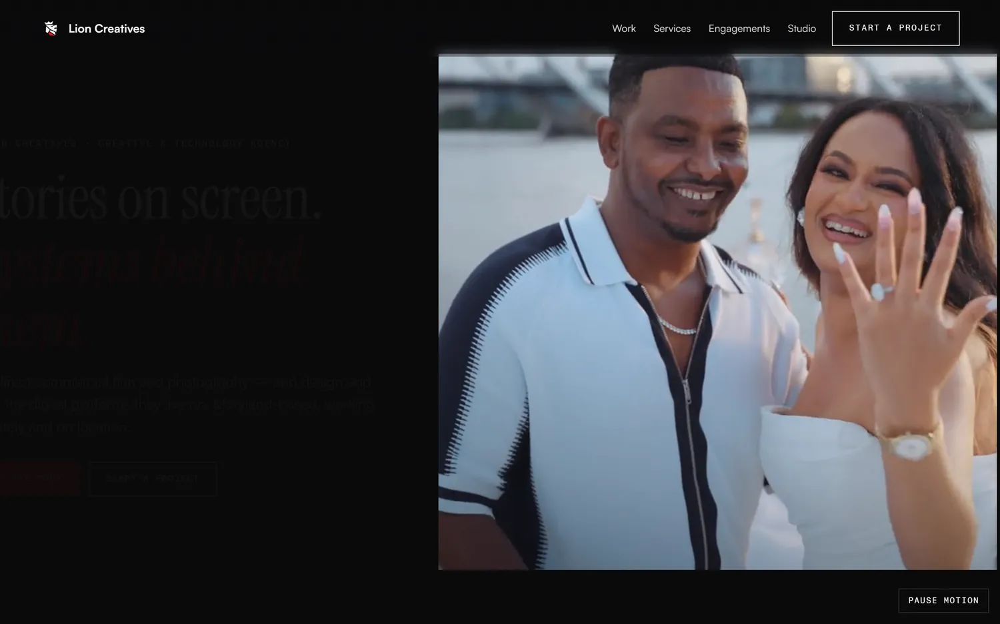
V8 · hero mid-scroll
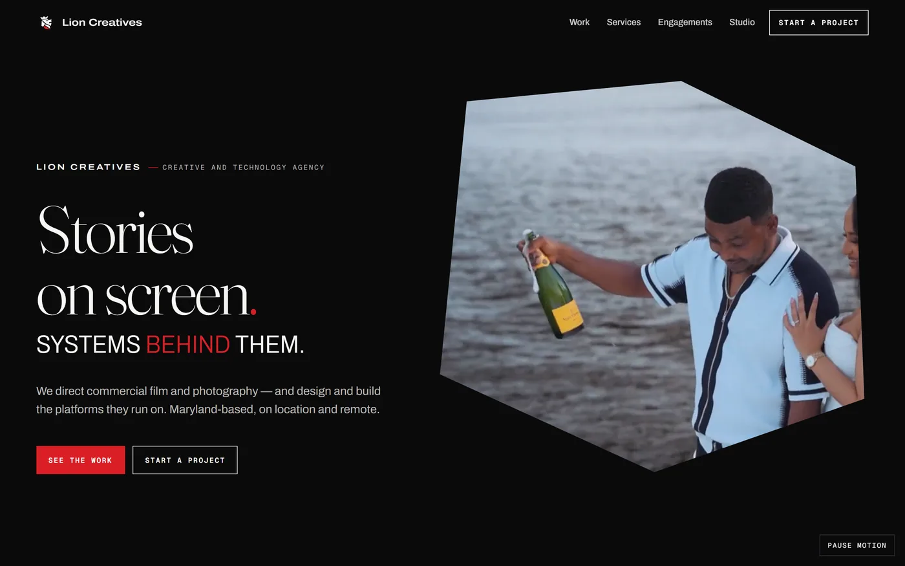
V9 · hero at rest
§4The empty left half
Cause: the copy column was faded to zero while the film kept only its right-hand grid column — roughly half the viewport was bare black. Change: the words change around a constant film plate. As the statement lifts away, the project identification takes the same column: label, project name, and the one production fact we can verify. Result: no scroll position leaves the left half empty.
V8 · hero 42% — half the frame is nothing
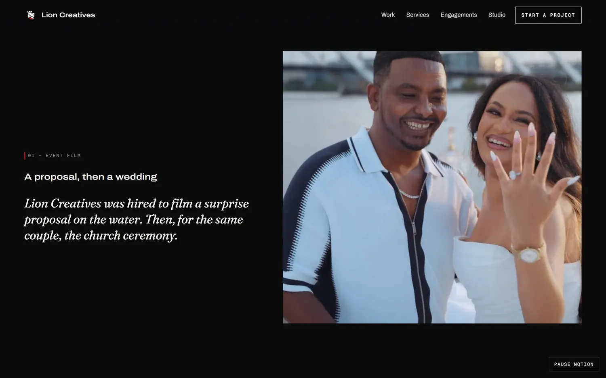
V9 · hero 42% — the film is identified
§5The shrink had no purpose
Cause: the film shrank because the interpolation looked interesting, then faded to nothing. Change: the plate no longer shrinks — its frame closes, from 72svh to 58svh, and the space it releases is immediately filled by the credit and the case-study link. A frame with a visible edge is an object; an object can be credited. Result: the movement now produces information. The scene holds to the end of its runway instead of fading out.
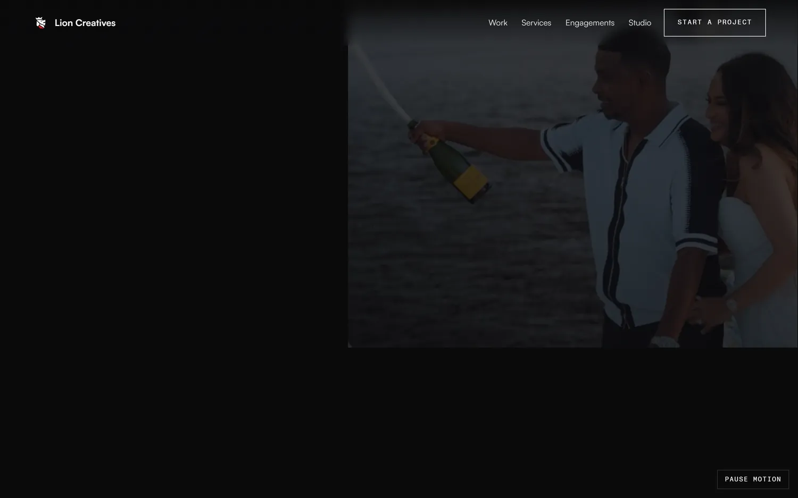
V8 · hero 90% — faded to nothing
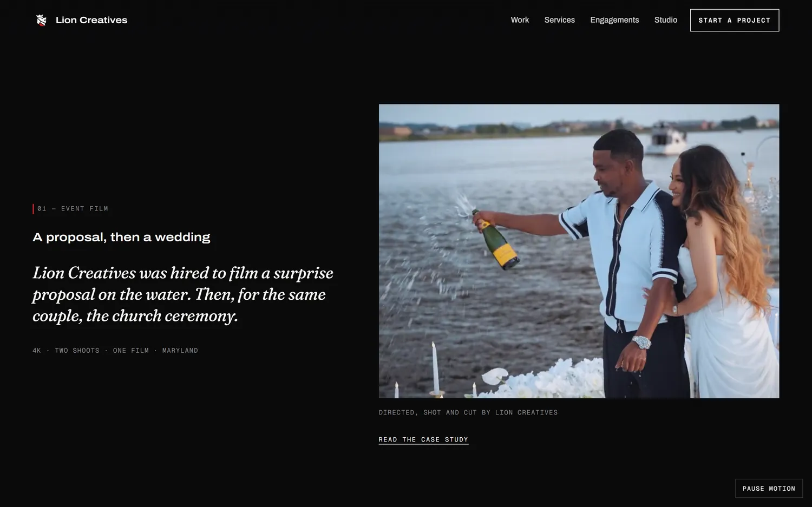
V9 · hero 92% — the credit is what the movement bought
§6 §7 §40Dead scroll
Cause, found in the code: two scenes were never pinning at all. #tech .stage and #engage .stage each set position:relative, and at ID specificity that silently overrode the engine's position:sticky. Their content scrolled away while the runway kept going — which is exactly the empty scrolling the founder hit twice. Change: the override is gone, and every scene now also composes on approach, before it pins, so the handoff between scenes is never an empty frame. Result: measured across the whole page at quarter-viewport steps, zero dead samples and zero weak samples. This is now an automated test.
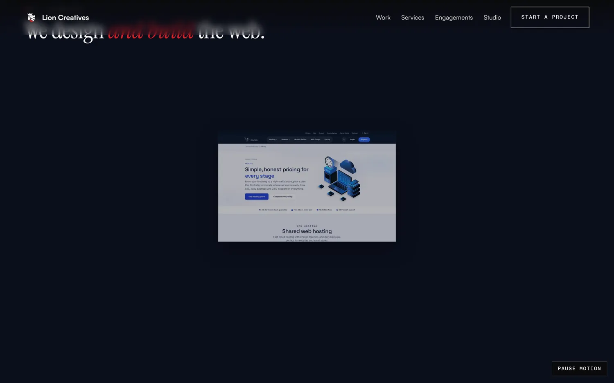
V8 · technology 10% — the field the founder objected to
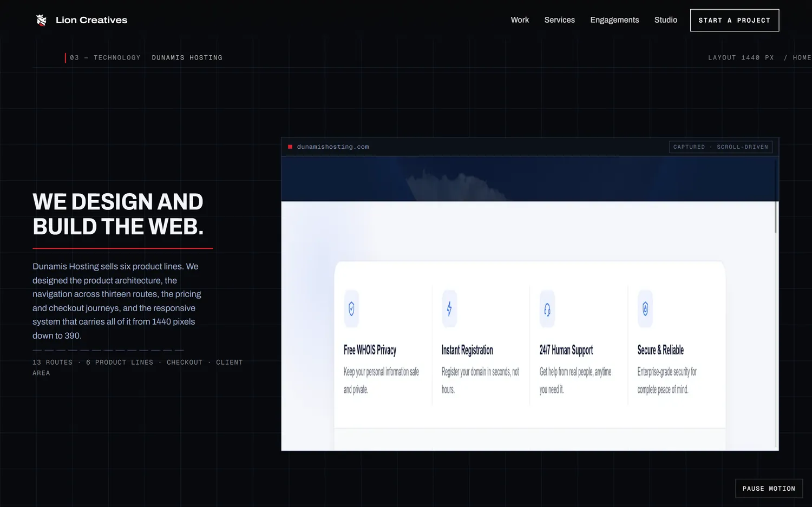
V9 · technology 10% — composed on arrival
§8 §9The commissioned films
Cause: the two vertical films held only 17–23% of the viewport across 1800px of scroll, and the slates pointed inward so each one landed on the opposite film. Change: a perspective rig carries both 9:16 films at 64svh with a focus handoff between them; the slates now sit outward into the margins. Result: the reels are the largest thing in their scene and no word touches a frame. The founder's reference site for the reel reveal has not been supplied yet — the 3D entrance is built with tuning points ready for it.
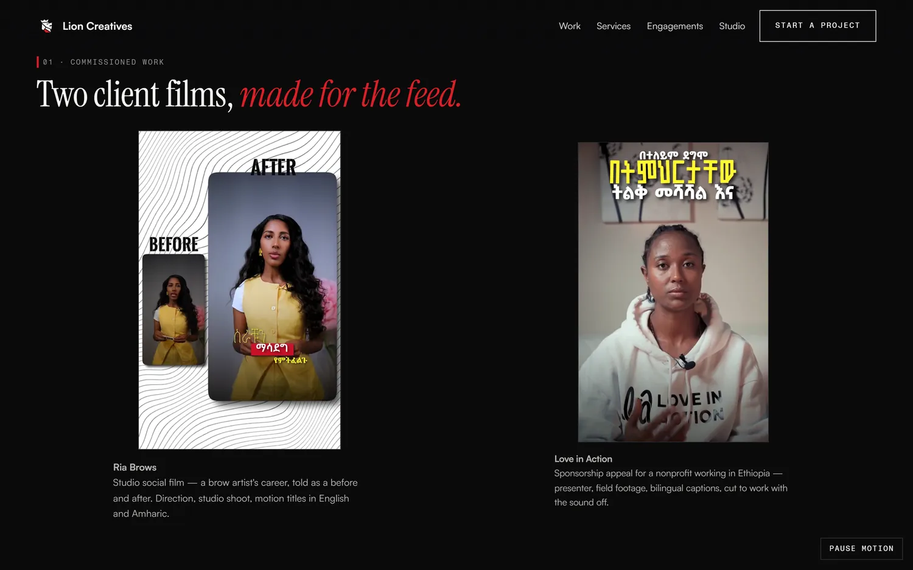
V8 · commissioned work
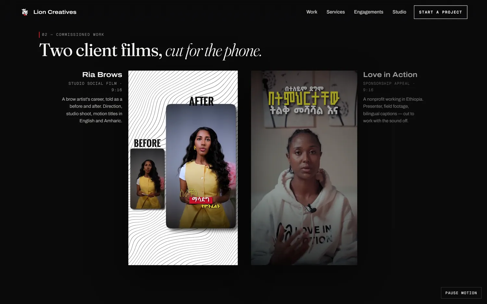
V9 · commissioned work
§15The header covered the headline
Cause: pinned stages had no header reservation, so display type sat under the fixed navigation. Change: the nav is measured at runtime into a --nav-h token and every pinned stage pads to it. Result: tested at 1440, 768, 390 and 360 across the whole page — no display headline sits under the header while its scene is pinned.
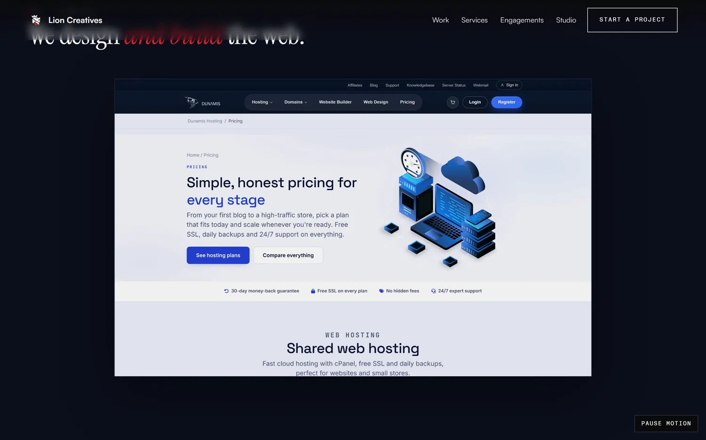
V8 · “We design and build the web.” cut by the nav
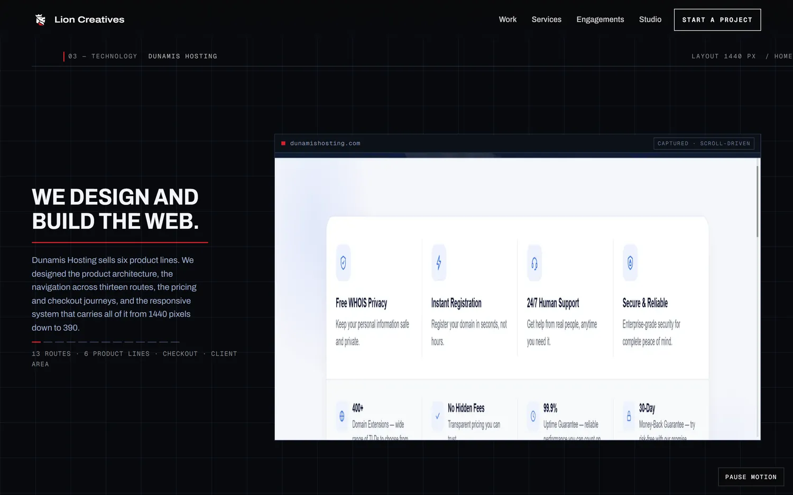
V9 · clear of the header at every width
§10–§14 §16–§19Dunamis: the transition, the copy and the phone
Live embedding is not possible, and we are not going to pretend otherwise. dunamishosting.com sends X-Frame-Options: SAMEORIGIN; Chrome refuses to frame it cross-origin (verified in the browser, not assumed). We did not weaken the client's security headers to make a portfolio effect work. Change: a drafting frame is drawn at final size — never grown from a thumbnail — and high-DPR captures of the real site are read at four desktop stops, then the viewport genuinely narrows to 390px and the phone layout paints in at its true width, then three phone stops. The whole demonstration is driven by the page's own scroll: there is no nested scroller, so there is nothing to be trapped in. Copy: rewritten from scratch; “a live commerce platform” is gone. Result: the scene reads as a live site being examined, and is labelled “Captured · scroll-driven” so the claim is honest.
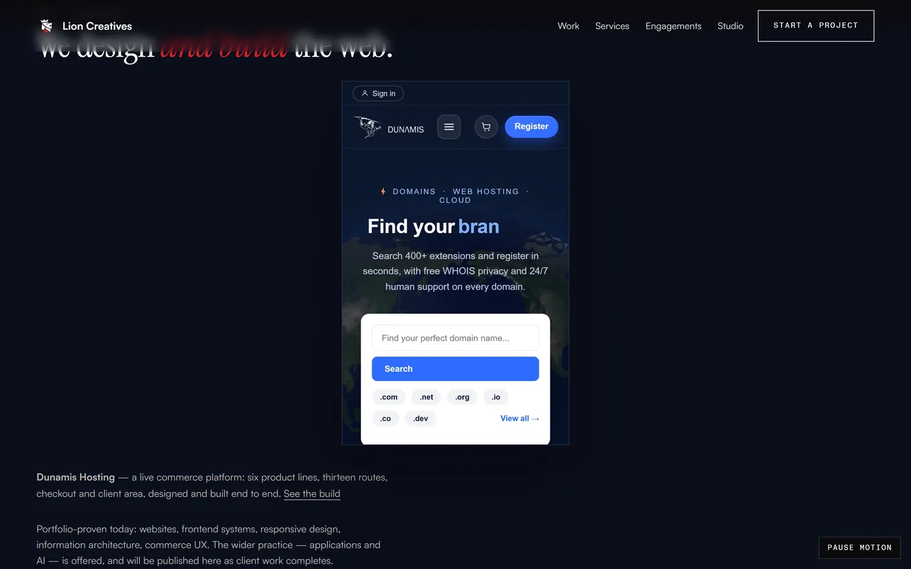
V8 · the phone treatment the founder rejected
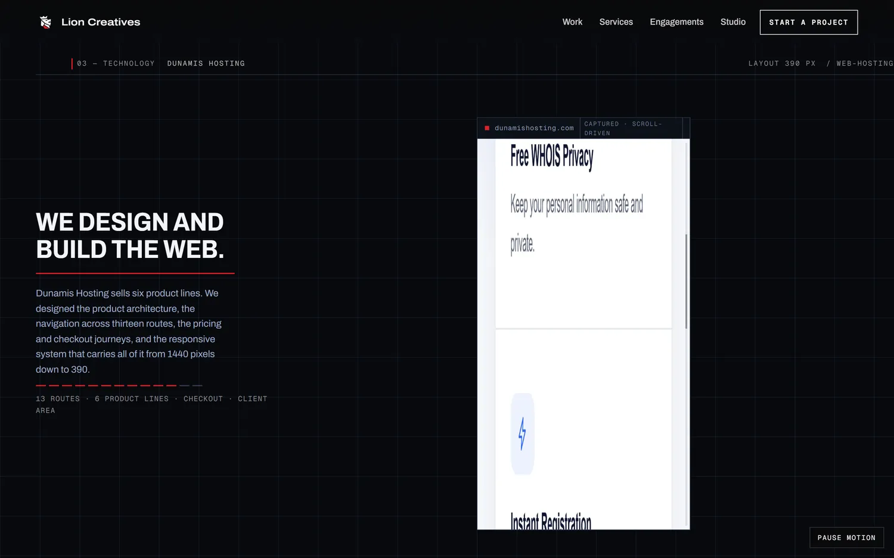
V9 · the same viewport, reflowed to 390px
One editorial decision to confirm: the captured region deliberately excludes the client's trust badge (“Trusted by 20,000+ · rated 4.9/5”) and their customer-testimonial band, because the standing rule is that Lion Creatives does not inherit Dunamis' marketing claims. The demonstration therefore opens on the product architecture our own copy describes. An incidental “99.9% uptime” product bullet remains inside the client's own page view — we did not doctor a live client page to remove it. Say the word and the hero band goes back in.
§20–§25Photography: the gallery, the timing and the type
Cause: “Commissioned photography” was set across the women's faces (rated 0/10 for readability), the large group frame arrived before the smaller frames had been seen, and the images floated in a large empty field. Change: the horizontal movement the founder liked is kept and the gallery is rebuilt around it. The title panel now travels inside the track, so it physically leaves the viewport before any photograph arrives — type cannot land on a face by construction. Eleven frames were re-exported from the 2400px originals (previously only 640px crops existed), composed with varying scale, portrait/landscape rhythm, deliberate vertical offsets and an edge-to-edge group finale, with the pacing slowed where the frames should be read. Result: an art-directed spread rather than thumbnails in white space.
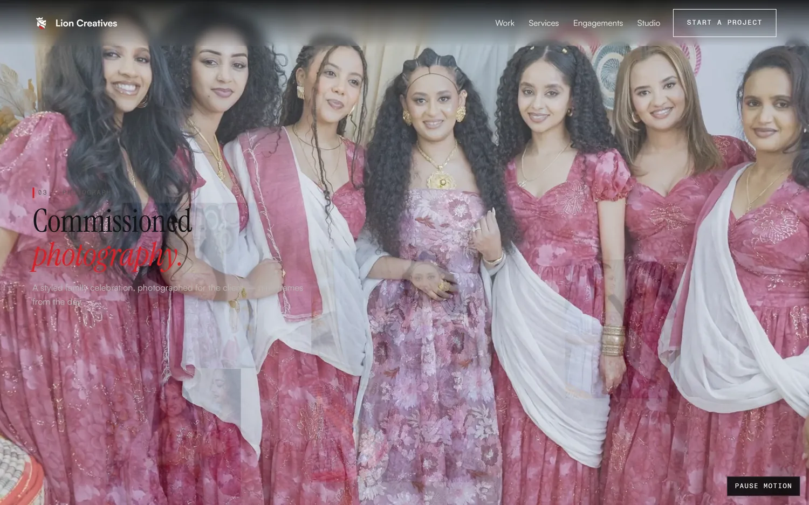
V8 · type across faces
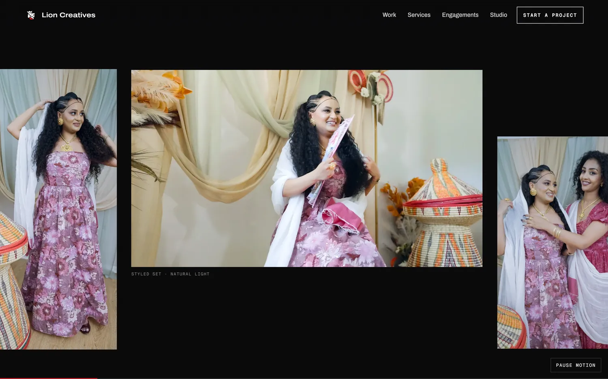
V9 · the title leaves before the pictures arrive
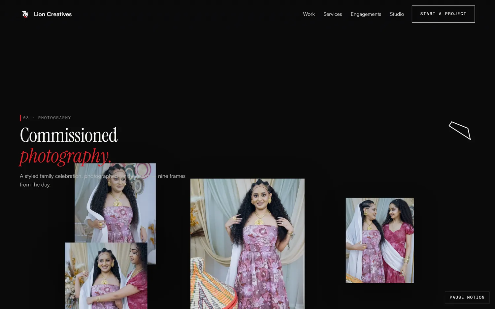
V8 · the gallery
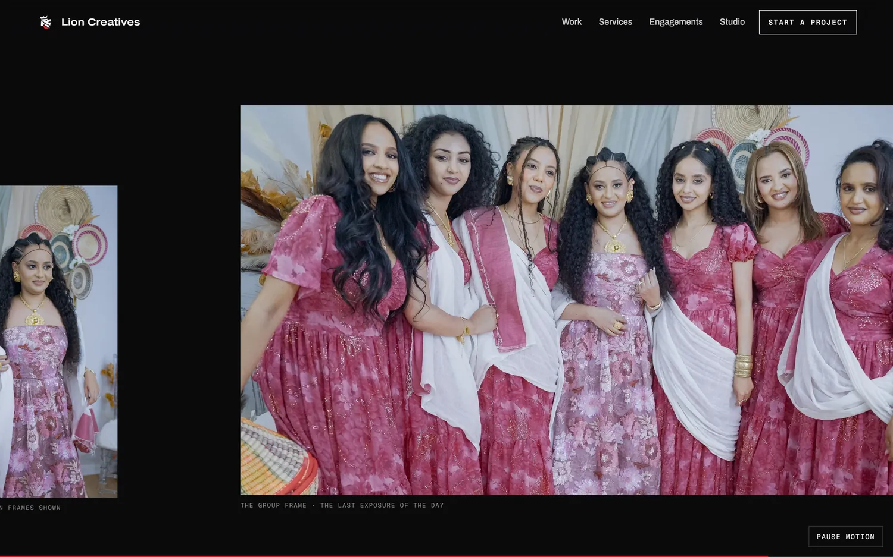
V9 · the rebuilt spread
§26–§28The team
Cause: a row of cards that read as SaaS pricing. Change: rebuilt as a field — five plates arriving out of depth, recomposing mid-scene, one person in focus at a time, resolving into a group frame. Focus is carried by blur and lift, never by colour: no desaturating filter is permitted anywhere in the scene, in any state, and that is asserted by test. Result: an editorial composition. All portraits stay in natural colour; Bisrat and Gelila keep a deliberate initials plate until their portraits are shot — never stock, never generated.
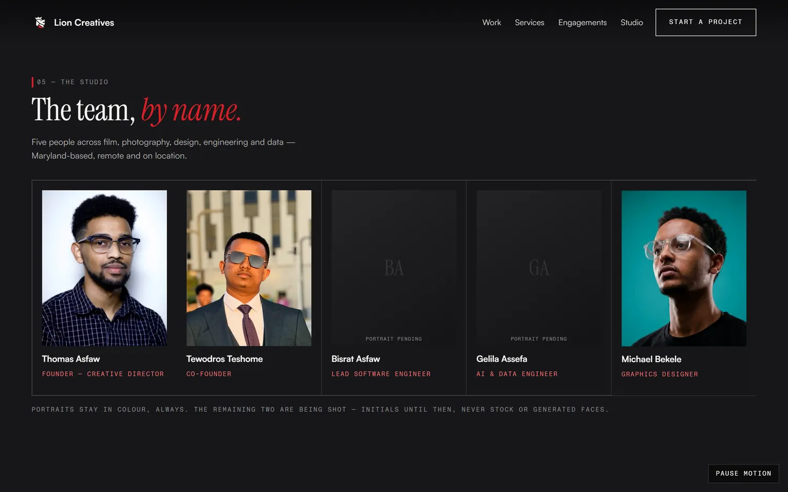
V8 · cards
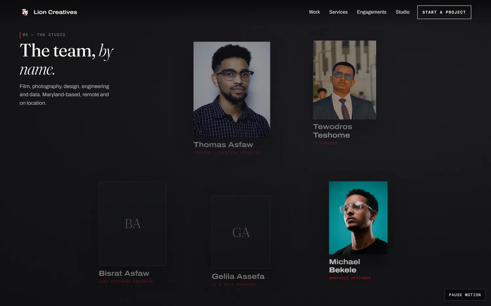
V9 · the field
§29 §30 §35The conversion moment
Cause: a red banner with a cramped line, arriving abruptly with no runway at all (283px tall). Change: the red rectangle is gone. A cream plane opens into the page through the mark's own geometry, the invitation sets line by line, the five projects just seen line up beneath it as traces, and the plate button — a bordered plate with a divided action square, not a pill — lands last. Result: the ask is earned by what precedes it, and the section now has 2.2 viewports of authored pacing.
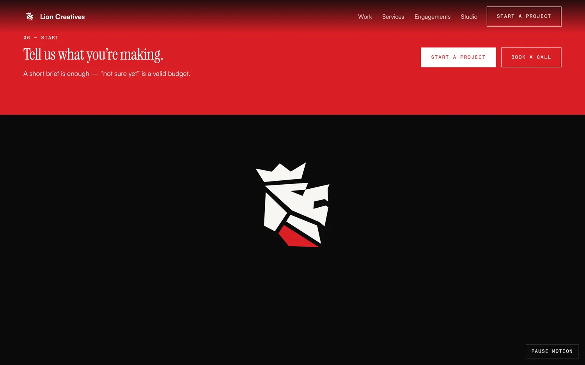
V8 · the red band
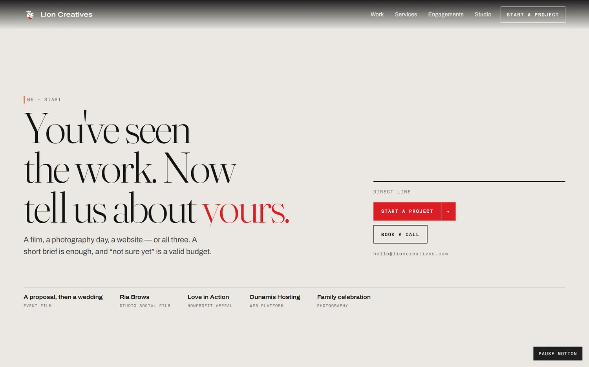
V9 · the open frame
§31–§34The finale
Cause: the mark did almost nothing, the closing line was giant centred text with an ordinary button under it, and the measured viewport at 92% of the page held 7% media and 1% text. Change: the five planes fly home along their own rays, lock to the exact canonical geometry at 34% and hold — the mark is recognisable from the first frame and perfect from the lock onward. The closing line then prints, a red rule races out from it, a hairline draws the full plate width, and the imprint and CTA land on one baseline. Result: a composed plate rather than centred text. The canonical point sets in the nav, the loader and the finale are byte-identical, asserted by test.
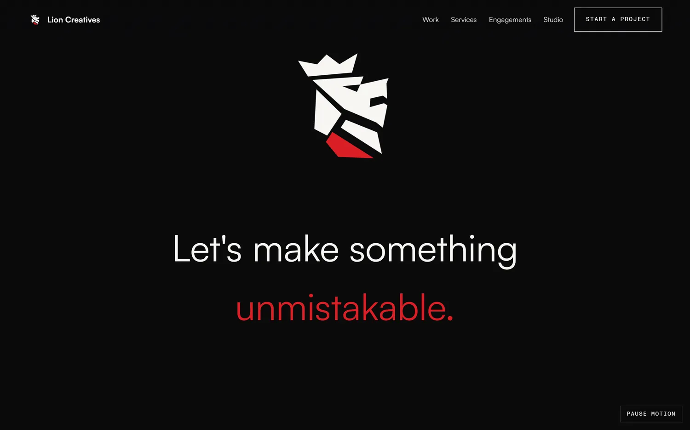
V8 · finale
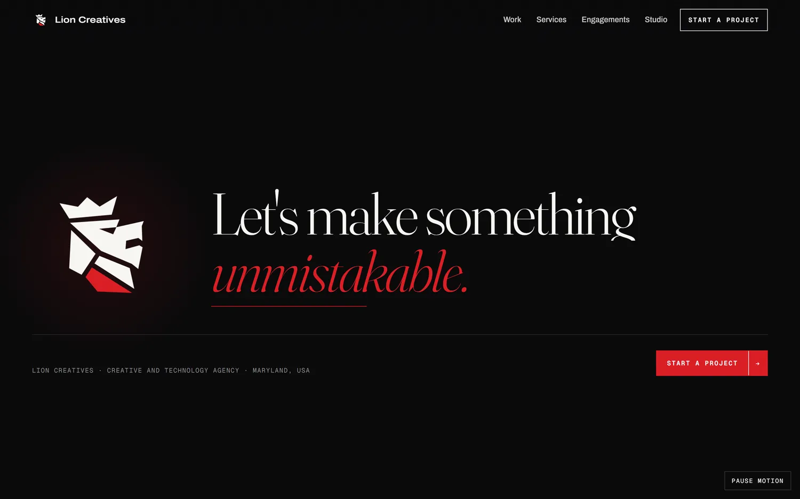
V9 · the plate
Automated gates — all passing
Every founder rule that can be checked by machine is now a test, so it cannot regress silently.
No dead scroll — whole page, quarter-viewport sampling, re-measured after settlingPASS
Type never crosses media — clip-aware, 25 scroll positionsPASS
No display headline under the header while pinned — 1440 / 768 / 390PASS
All eight stages genuinely pinPASS
Dunamis reflows 1440 → 390 with no nested scroller to trap anyonePASS
Every image owns the pixels its largest rendered size needs at DPR 2PASS
The mark locks to canonical geometry; nav / loader / finale byte-identicalPASS
No rejected copy, no private names, no inherited client claims, five named peoplePASS
Portraits carry no desaturating filter in any statePASS
Editorial edition complete without JS; no horizontal overflow at 360/390/768/1280PASS
Loader leaves the accessibility tree; menu is a real dialog with focus returnPASS